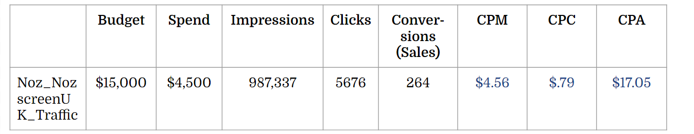

Nöz
Overview
In my junior year of college, I took the digital marketing track of the Global Tech Program. The Global Tech Program focused on three factors: authentic experiences, applied learning, and intercultural communication training.
This experience also consisted of a long-term project throughout the course. The client for this project is Nöz, a company that makes colorful sunscreen for your nose. Focused primarily on creating an ecommerce website with Shopify and social media marketing, this project has a breadth of content created.
Disclaimer: Nöz is a fictional brand made for instructional purposes only. No products are available for sale.
Tools
Over the course of this project, the tools used were:
- Shopify
- Facebook/Meta
- Canva
- Sprout Social
- Insense
- Meta Ads Manager
- Google Ads
- Google Trends
My Role
This was an individual project, so I assumed the following roles:
- Digital Marketing Specialist
- Social Media Marketer
- Website Designer
- Data Analyst
- SEO Specialist
- A/B Tester
Timeline
This project occurred over the course of one semester (4 months) as follows:
- Personas (2 weeks)
- Social Media Marketing (5 weeks)
- Campaign Results and Calculations (1 week)
- Website Design (5 weeks)
- SEO (2 weeks)
- A/B Testing (1 week)
Personas
Nöz wanted to gain a deep understanding of the customers they are marketing towards, especially in terms of their thoughts, feelings, dialogue, and actions, so we can truly understand their pains and gains and how to curate them. Four personas were included in the Nöz Brand Guidelines, including Cory the Camper, Frances the Fashionista,Mary the Mom, and Linda the Londoner. The personas were used to step into the heads of our users when interacting with the product and website and disregard any personal biases that may have been formed in the development process of the company's design.
From the three provided customer personas, I created an empathy map focused on Frances the Fashionista. In order to do this, I had to put myself into her shoes and evaluate the things she would think, feel, say, and do. Following this, I could assess her three biggest pains and gains. Each step of this map is important, as it is people like Frances the Fashionista that can represent The honest feedback and insight needed in a brand or product.
Empathy maps and customer personas can additionally help the company analyze the market and notice any friction points that would otherwise go unnoticed from those who are already educated on the brand from working on the project. If the personas are not routinely used, it can be easy to forget the multiple types of audiences that engage with the company. As a result, the company could end with a product and values that only pertain to a certain group and therefore lose a monumental amount of customers and sales.
Social Media Marketing
Nöz was interested in creating a social media presence in order to extend their outreach with customer acquisition and market more efficiently.
Before anything was created, content pillars for Nöz's social media accounts were set. The pillars created both abided by the Nöz Brand Guidelines and took into consideration the type of content that works in each channel.
Facebook/Meta and Instagram have evolved into more professional types of social media, so Nöz's presence focuses on more commercial matters such as the product itself or business-friendly imagery. On the contrary, TikTok heavily favors less filtered and almost strictly unprofessional content. This is the reasoning behind the content that was chosen for this channel specifically, as the TikTok community would much rather watch and engage with videos that are already favored such as stim boards or tips and tricks videos.
Instagram is one of the most important tools for a company marketing on social media. With that being said and the content pillars outlined, a Nöz Instagram account was created.
Using Canva and the Nöz Assets and Images, three posts were designed to show product promotions and discounts, and aesthetic nature photos featuring Nöz. In each post there was a square dashed outline, this was to create a sense of consistency with each post and would serve as a subtle reminder of the brand behind the post. This can be very helpful in the sense that Nöz offers content that can be helpful to anyone and keeping the branding consistent will create a positive impact that will lead to conversions.
The Nöz Instagram can be viewed here.
Sprout Social is a software tool that is used for brand's social media management. This platform enables Nöz's team to strengthen their business value, and quickly drive revenue with social media posts.
In using this tool, Nöz was able to:
- Program content labels, including: new products and user generated content as outlined in the Facebook/Meta pillar
- Add notes to calendar with certain holidays that are important to the brand's values, including: Women's History Month, Day of Happiness, and World Water Day
- Select in-brand user generated content, including: choosing from the posts in Instagram hashtag #getnoz, resizing/redesigning the UGC, and getting permission from the user
- Program a post to Facebook/Meta with a caption that includes: benefit, call to action, hashtags #getnoz, #nosescreen, and #sunscreen
Going global by extending business overseas to the UK is Nöz's next goal, and their step to do so is with influencer marketing.
Based on the Nöz Goes Global Campaign Brief and additional details for influencer marketing, the type of influencers chosen were a macro (500K-2M) influencer or multiple micro (<500K) influencers. These types were chosen due to the fact that a celebrity (2M+) influencer would be too expensive for Nöz's budget and size, while only a singular micro influencer would not have enough engagement.
Using Insense, a platform for user generated content and creator ads, three micro influencers were chosen based on their location, their audience, their brand/their typical posts, and their price.
Working with the aforementioned Nöz Goes Global Campaign Brief, two campaigns of Facebook/Meta ads were necessary. Using Meta Ads Manager, two campaigns were created focusing on different audiences.
The first campaign's objective is awareness, to expose new customers to the Nöz brand and create recognition. Since this campaign targets an interest-based audience, Facebook/Meta will show the ads to people that are most likely to remember the brand afterwards. The KPI metric used to define success for this campaign is impressions and ad recall. The cost-efficiency metric is CPM.
The second campaign's objective is sales, and is targeted towards those who already have prior knowledge of Nöz or have already seen ads for brand awareness. Moreover, this campaign retargets the audience that engaged with the previous campaign who are most likely to purchase the product. The KPI metric used to define success for this sales. The cost-efficiency metric is CPA.
Additionally, an interest-based audience was created and a retargeting audience was built for anyone who has engaged with the account in 180 days. Due to the settings generated, these ads will only reach people living in the UK and will be displayed on Instagram Feeds, Instagram Explore, Instagram Explore Home, and Facebook Feed.
Separately, Google Ads was used for paid search and an unrelated campaign was created focusing on keywords. A list of keywords were categorized into three different ad groups focusing on eco-friendliness, style, and cost. Then, a selected ad group's keywords were programmed into Google Ads using match types.
Campaign Results and Calculations
An additional campaign focused on website traffic had the following results. Based on the numbers displayed above, I calculated Cost per Measurement/Thousand Impressions (CPM), Cost per Click (CPC), and Cost Per Acquisition (CPA) using their respective formulas. The benchmark values are $4.66 for CPM, $0.75 for CPC, and $10.98 for CPA. The actual values, as displayed above, are $4.56 for CPM, $0.79 for CPC, and $17.05 for CPA.
Based on these benchmarks and calculations, the cost-efficiency metric that should be used is CPC because the campaign's objective is website traffic, and CPC focuses the most on direct website interaction. The benchmark value was .75, the actual value was .79, and the percent difference was 5.33%. Due to the fact that the actual value was better than the benchmark value, it is important to continue this campaign or continue to use the same tactics from it, especially because every other metric exceeded as well.
Disclaimer: These numbers are fictional and were used for instructional purposes only. No measurements were actually made as Nöz is a fictional brand.
Website Design
Choosing a quality hero image is essential for the Nöz website. Using the Nöz Assets and Images, five images were chosen for the hero image slideshow. With each picture selected, I wanted to demonstrate Nöz's four brand attributes: optimistic, nerdy, adventurous, and fun. To do this I specifically chose hero images from the assets that included people outside with big smiles and doing activities they love. Keeping these standards in mind, I also wanted to showcase inclusion by capturing the product being used by a variety of different people with characteristics including race, ethnicity, gender identity, and size. Lastly, the images were placed in a strategic order to have text comfortably and appealingly aligned on the opposite side with each image to not lose the viewer's attention.
Brand voice is used to make the most powerful statements. While designing the website, several phrases were created for Nöz.
Value Proposition:
Colorful, reef-safe sunscreen for your nose that's made with style!
Mission Statement:
We believe you should "lead with your nose" to skincare that's healthy, happy, and hip.
Slogan:
Bring back the lifeguard nose
As important as brand voice and value propositions are, sales are the ultimate goal. In order to push sales, below the value proposition is a featured product (Nözscreen) to shift the user's focus onto purchasing.

Brand visualization and following the Nöz Brand Guidelines are a priority when designing the Nöz shopify website. When creating the store color palette and typography, the hex codes and specific fonts from the guidelines were used to create a feel of consistency with the brand's content and look and feel.
In the color selections, I decided to keep the background color light to reflect the modern and happy feeling of Nöz. Moreover, because the background is light, I kept the text dark so it is easy to read for all users. I set the rest of the “accent” features as the red, yellow, blue, and green to show off the fun colors of the company and follow the same color palette in all content Nöz related.
The typography and fonts of the Nöz website did not have the same flexibility as the colors. However, in the selections, it was chosen for headings and body text to be in Domine (bold and regular), while the accent text was in Roboto. This was done strategically to keep the text consistent in its font unless there are things that need to be attention-grabbing with accent text.
Trust badges are used to increase credibility and trust and improve conversion rates. In order to gain customer's confidence, trust badges were added to Nöz's website, including in the description for each product sold and at the bottom of every page. The badges included are "No Animal Testing", "Eco Friendly", and "Go Vegan." These badges are also colored to match the Nöz Brand Guidelines specified color palette.
SEO
Utilizing Google Trends, keyword research was done to determine where keywords rank in terms of trend (up, flat, or down) and volume (100 - 1K, 1K-10K, 10K-100K). After creating a chart with visual color coding, I selected keyword phrases based on the previously gathered data, how well they represent the brand, readability, and transactional intent. Focusing on these keyword phrases, a homepage title and homepage meta description were created to optimize search engine results by using it as a tool to pick up the keywords written in these areas.
Title:
Nöz - Cool Colorful Sunscreen for Face | Reef Safe and Eco Friendly
Description:
Environmentally friendly sunscreen for your nose that's made with style! Available in multiple colors for all of your SPF needs. Contains dermatologist recommended zinc oxide Bring back the lifeguard nose!
In addition, keywords were added into the alternate tags in the photos used in the Shopify website to further use SEO and derive website visits.
A/B Testing
A/B testing is a method of comparing two versions of a web page to figure out the better performing variation. In this version the test was done randomly without any disturbance from the user, using sales, visitors, and conversion rate (CVR) as the metrics. The test conducted was based on the call to action button on the landing page. Version A was the original with the button's text reading "Shop Now", while Verion B's button had text reading "See More."
The results from the A/B determined that the winner was Version A, however both versions performed incredibly close. Version A converted 1% better than Version B and there is only 51% certainty that Version A would improve the conversion rate, which is not statistically significant.
Results
View Nöz's Shopify store here. View Nöz's Instagram here.
Next Steps
Though the job is never finished when it comes to social media management, website design, and marketing, since Nöz is purely a fictional brand it does not need any continuous upkeep. However, if I was to continue working on this project there are a few things I would improve upon, including issues with the hero image scalability, adding reviews, adjusting the Shopify domain, and editing the value proposition, mission statement, and slogan.
Throughout the design process of the online store, the hero images slideshow has been edited time and time again. While I am proud of the final result, there are a number of things I would like to have adjusted but did not have the time to do so. Firstly, in the image selection, I was particular about the qualifications but it limited my options when also trying to appeal to different audiences. I wanted to specifically highlight men, to advertise that Nöz is a product for all gender identities, and avoid falling into a "for girls" category that I know first-hand can steer buyers away solely because of what the label entails. That is why despite wanting to target this audience, there is only one photo containing men. Secondly, the text alignment on the hero images was not achieved as seamlessly as I had envisioned. In the first image, if the text is centered it blocks the focal point and lasting impact of the picture, so it was decided to have the text on the left. However it still feels a little "off" in the way it covers up part of one of their faces. However, with Shopify's limitations, this text alignment issue was prevalent in almost every other photo in the slideshow and I did not have the time to dive into the code to align the text to wrap around the foreground. Thirdly, the way the images scale in the phone display was a huge and often overlooked issue until it was too late. With the selection of a full screen hero image, the horizontal photo was cropped into a vertical one that cut off important features, so instead the option of adapting to the first image was chosen. Due to Shopify's settings, with this selection on phones, the text on the hero images was instead displayed underneath the image instead of on it, which looked less united and repetitive.
Adding reviews was an important addition to the website to give customers a reliable source of opinions for the products and provide a sense of community. However, because Nöz is a fictional brand and did not actually sell any products, there was no ability to actually collect reviews from buyers. Instead, it was suggested by the instructors to write "example" reviews to enhance the website using a Shopify extension. Unfortunately, by the time I was going to implement reviews the extension was updated and only allowed for reviews via email after a purchase, preventing any self-written reviews.
A website's domain is astonishingly important because it is the way it is reached. In the initial setup of my Shopify account, it was instructed that students name their store "globaltechyourname." Somehow during this process I fumbled this step and instead ended with a random domain, hence the 91a4c5 in the website's URL. Shopify store domains can only be changed once per account, and I did not want to use this change for this one project in case I use this account for other projects and am stuck with a domain focused on Nöz.
The value proposition, mission statement, and slogan for Nöz were created towards the beginning of the project, but were given little to no thought afterwards. In my opinion, they don't align entirely with the brand personality and its overall purpose, and could really benefit from some more thought. With that being said, if I had more time or the chance to do this project again, I would work on the value proposition, mission statement, and slogan for longer or change them entirely.
Learnings
In conclusion, this project taught me a lot about social media marketing, website design, and using software such as Shopify, Meta Ads Manager, and Google Ads. Much of the content I created on this project was the first time I had done actual work using marketing ideas instead of just learning about their concepts. This experience helped me gain skills I never would have truly understood without doing the work myself, and it showed that I can be a quick and efficient learner even when exposed to things for the first time. The final portfolio assessment containing everything outlined above got a score of 100% and an A+ in the class, further displaying my understanding of these concepts and practices.